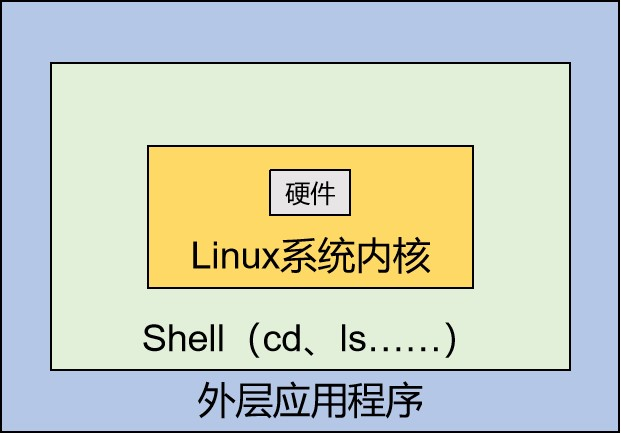
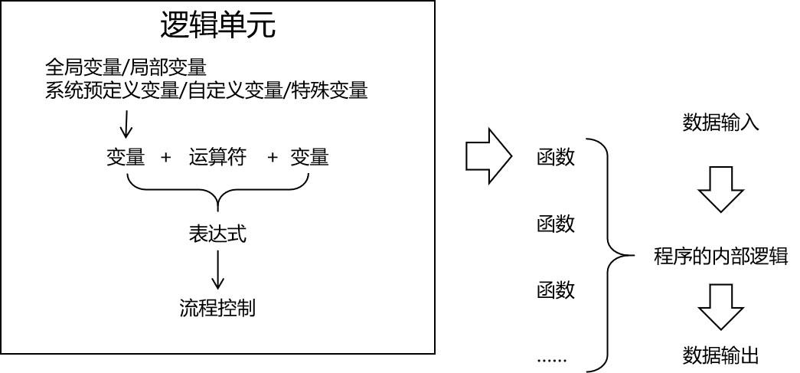
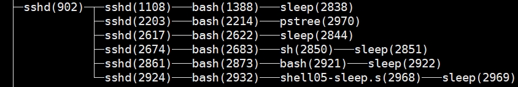
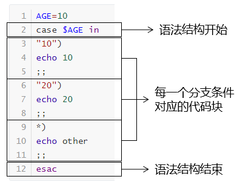

第三节 Linux系统环境下Shell脚本开发1、Shell编程概述①Linux系统提供的Shell解析器②bash和sh的关系③Linux默认的解析器是bash④Shell语法总述2、Shell编程HelloWorld①创建脚本文件②脚本内容③Shell脚本的运行方式3、变量①系统预定义变量②使用set命令查看所有变量③自定义变量[1]基本语法(1)定义变量(2)撤销变量(3)声明静态变量[2]语法规则④特殊变量[1]$n[2]$#[3]$*和$@[4]$?4、运算符5、条件判断①基本语法②常用判断条件6、流程控制①三目运算②if判断[1]单if[2]if...else[3]if...elif③case判断④for循环⑤for in循环⑥while循环7、函数8、获取脚本外部数据①获取参数②使用read读取用户输入
Shell是一个命令行解释器，它接收应用程序或用户的命令，然后调用操作系统内核。

Shell还是一个功能强大的编程语言，易编写、易调试、灵活性强。
1[root@hadoop101 ~]$ cat /etc/shells 2/bin/sh3/bin/bash4/sbin/nologin5/usr/bin/sh6/usr/bin/bash7/usr/sbin/nologin8/bin/tcsh9/bin/csh其中最常用的是/bin/sh和/bin/bash
xxxxxxxxxx31[root@apple w]# ll /usr/bin | grep bash$2-rwxr-xr-x. 1 root root 964544 4月 11 2018 bash3lrwxrwxrwx. 1 root root 4 7月 9 16:42 sh -> bashsh是bash的软链接
xxxxxxxxxx21[root@apple w]# echo $SHELL2/bin/bash

通常以.sh作为扩展名。
第一行指定当前脚本的解析器：
xxxxxxxxxx11实现具体功能：
xxxxxxxxxx11echo "hello world"
| 命令名 | 在当前进程运行 | 新建子进程运行 |
|---|---|---|
| source | √ | |
| . | √ | |
| sh | √ | |
| bash | √ | |
| chmod +x后直接运行 | √ |
其中“.”是source的另一种写法。在当前进程中发布的全局变量可以在当前进程的其他脚本中继续沿用，也可以在子进程中使用；但是子进程export发布的变量仅限于子进程内部使用。

从上面进程树中能够看到，sh、bash、直接运行这三种方式确实是开辟新的子进程运行脚本中的代码。
常用系统变量包括：$USER、$HOME、$PWD、$SHELL等，可以使用echo命令输出它们的值。
xxxxxxxxxx71ABRT_DEBUG_LOG=/dev/null2BASH=/bin/bash3BASHOPTS=checkwinsize:cmdhist:expand_aliases:extglob:extquote:force_fignore:histappend:interactive_comments:login_shell:progcomp:promptvars:sourcepath4BASH_ALIASES=()5BASH_ARGC=()6BASH_ARGV=()7……
xxxxxxxxxx11USER_NAME=tom
x1[root@apple ~]# USER_NAME=tom2[root@apple ~]# echo $USER_NAME3tom4[root@apple ~]# unset USER_NAME5[root@apple ~]# echo $USER_NAME6
xxxxxxxxxx71[root@apple ~]# readonly COMPANY_NAME=atguigu2[root@apple ~]# echo $COMPANY_NAME3atguigu4[root@apple ~]# COMPANY_NAME=uuu5-bash: COMPANY_NAME: 只读变量6[root@apple ~]# unset COMPANY_NAME7-bash: unset: COMPANY_NAME: 无法反设定: 只读 variable不能修改，不能撤销
n是数字，$0代表当前脚本名称。从$1开始代表对应的脚本参数。从${10}开始数字需要使用{}括起来。
xxxxxxxxxx101[root@hadoop101 datas]$ touch parameter.sh 2[root@hadoop101 datas]$ vim parameter.sh34echo "$0 $1 $2"67[root@hadoop101 datas]$ chmod 777 parameter.sh89[root@hadoop101 datas]$ ./parameter.sh cls xz10./parameter.sh cls xz
返回输入参数的个数
xxxxxxxxxx111[root@hadoop101 datas]$ vim parameter.sh23echo "$0 $1 $2"5echo $#67[root@hadoop101 datas]$ chmod 777 parameter.sh89[root@hadoop101 datas]$ ./parameter.sh cls xz10parameter.sh cls xz 112
都能够返回全部参数，但是只有在循环中且放在引号中能够体现出它们的区别。
xxxxxxxxxx131[root@hadoop101 datas]$ vim parameter.sh23echo "$0 $1 $2"5echo $#6echo $*7echo $@89[root@hadoop101 datas]$ bash parameter.sh 1 2 310parameter.sh 1 2113121 2 3131 2 3
返回上一条命令的执行结果。
条件判断语句
普通语句
$((表达式))或$[表达式]
xxxxxxxxxx61[root@apple ~]# echo $((20+30))2503[root@apple ~]# echo $(((15+15)*2))4605[root@apple ~]# echo $[(15+15)*2]660
写法1：test condition
写法2：[ condition ]
| 数据类型 | 写法 | 含义 |
|---|---|---|
| 数值 | -lt | less than小于 |
| 数值 | -le | less equal小于等于 |
| 数值 | -eq | equal等于 |
| 数值 | -gt | greater than大于 |
| 数值 | -ge | greater equal大于等于 |
| 数值 | -ne | not equal不等于 |
| 文件 | -r | read有读权限 |
| 文件 | -w | write有写权限 |
| 文件 | -x | execute有执行权限 |
| 文件 | -f | file文件存在并且是一个常规的文件 |
| 文件 | -e | existence文件存在 |
| 文件 | -d | directory文件存在并是一个目录 |
xxxxxxxxxx21[root@apple w]# [ 10 -gt 5 ] && echo "10大于5" || echo "10小于5"210大于5
注意：if后面有空格
xxxxxxxxxx41if [ 10 -gt 5 ]2then3echo "10大于5"4fi
xxxxxxxxxx61if [ 10 -gt 5 ]2then3echo "10大于5"4else5echo "10小于5"6fi
xxxxxxxxxx91if [ 10 -gt 5 ]2then3echo "10大于5"4elif [ 10 -lt 5 ]5then6echo "10小于5"7else8echo "10等于5"9fi
x
1AGE=102case $AGE in3"10")4echo 105;;6"20")7echo 208;;9*)10echo other11;;12esac
x
1for (( i=1;i<=10;i++ ))2do3echo $i4done
x
1# 如果需要使用外部数据，则需要把外部数据赋值给一个变量，不能在for语句中直接使用3len=$145for (( i=1;i<=len;i++ ))67# 从do关键字开始是循环体开始8do910echo $i;1112# 到done关键字为止是循环体结束13done
x
1for i in $*2do3echo $i4done没有引号的时候$*和$@一样，加了引号就有区别
xxxxxxxxxx41for i in "$*"2do3echo $i4done上面代码输出的结果是：
xxxxxxxxxx21[root@apple w]# sh shell42.sh a b c d e2a b c d e
x
1s=02i=13while [ $i -le 100 ]4do5 s=$[$s+$i]6 i=$[$i+1]7done89echo $s
Shell编程中的函数和我们以前熟悉的函数最大的区别是：Shell编程中要求函数的返回值只能是整数。并且只能通过$?方式获得。可以显示加：return返回，如果不加，将以最后一条命令运行结果，作为返回值。return后跟数值n(0-255)。
x
1function sum() {2 echo $[$1+$2]3}45sum 10 20
x
131# 声明函数3function sum(){4 # 使用$1、$2引用函数传入的参数5 return $[$1+$2]6}78# 调用函数，传入参数9sum 10 201011# 使用$?获取函数执行结果12echo "sum 10 20执行的结果是$?"
这个前面说过了，通过$1、$2、……方式获取，从${10}开始需要使用大括号。
read命令有两个常用参数
x
1read -t 10 -p "please enter:" NAME2echo $NAME